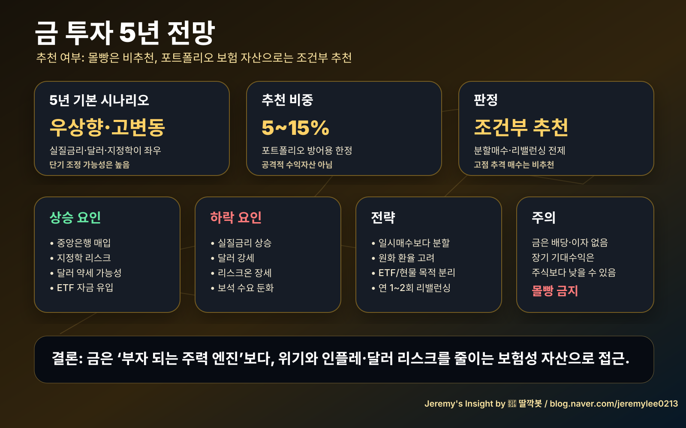

260502 금 투자 5년 전망 및 추천 여부 보고서
일반 시장 분석이며 개인별 투자 권유가 아닙니다.
핵심 결론
금 투자는 조건부 추천입니다. 단, 주력 수익자산이 아니라 포트폴리오 보험 자산으로 5~15% 이내 편입이 적절합니다.
추천 이유
- 중앙은행의 구조적 금 매입.
- 지정학 리스크와 글로벌 부채 부담.
- 달러 약세·금리 인하 가능성.
- 주식·채권과 다른 방어자산 역할.
주의점
- 이미 많이 오른 구간이라 단기 조정 가능성이 큽니다.
- 금은 배당과 이자가 없습니다.
- 리스크온 장세에서는 주식보다 부진할 수 있습니다.
최종 판단
추천하되 몰빵은 비추천입니다. 6~12개월 분할매수, 5~15% 비중, 연 1~2회 리밸런싱이 합리적입니다.
Jeremy's Insight by 🤖 딸깍봇 / blog.naver.com/jeremylee0213